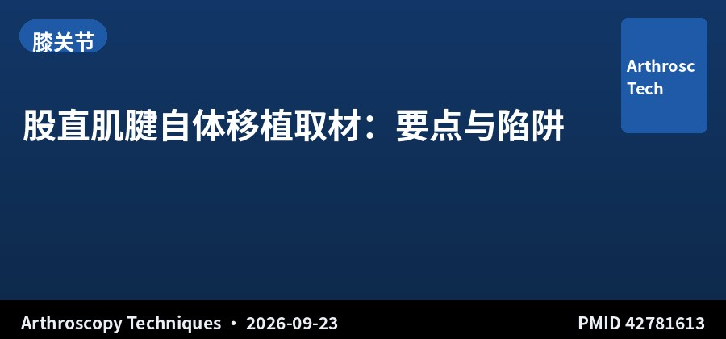
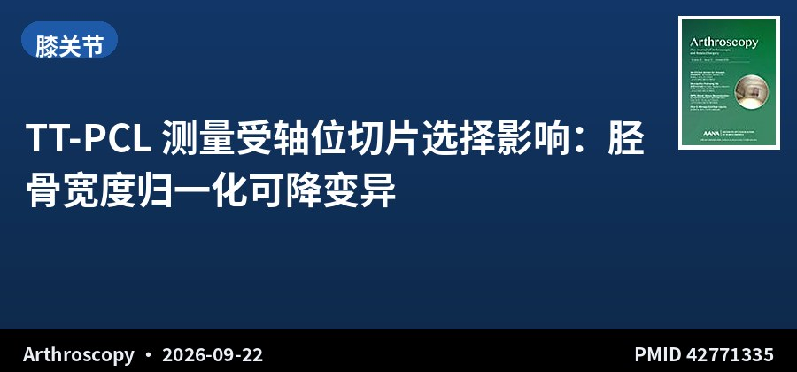
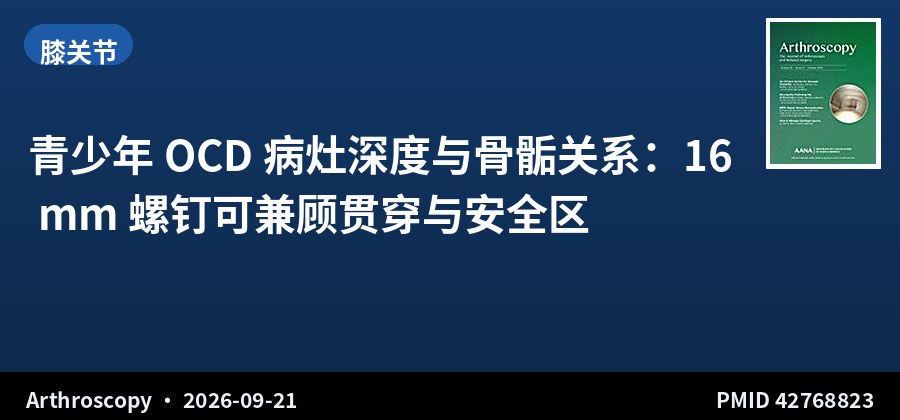
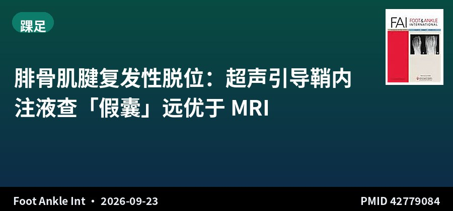
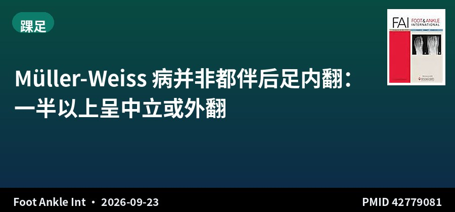
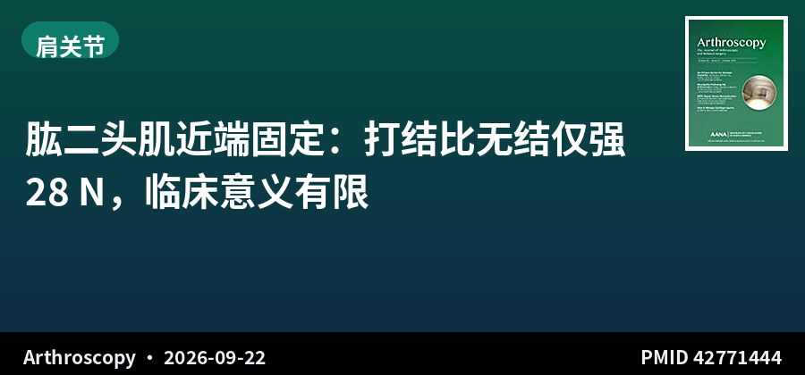
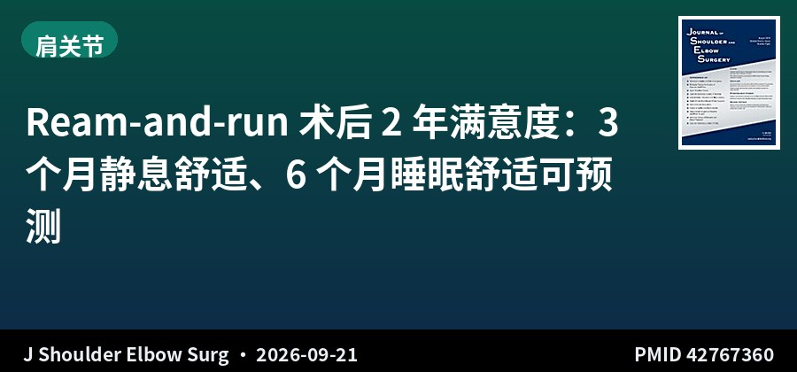

SPORTS MEDICINE & ARTHROSCOPY DIGEST
运动医学 · 关节镜文献速览
第 016 期 · 2026-09-25
9月24日新收录 3 篇 + 上期补遗 4 篇（9/21–22 漏录）
Knee 3 · Foot & Ankle 2 · Shoulder 2 ｜ 1 systematic review/meta · 2 foot-ankle diagnostic/cohort · 2 technique notes
编者按 EDITOR’S NOTE
本期分两部分：9 月 24 日新收录仅 3 篇（均为实质临床文献），另按昨日计划补上 014 期漏录的 4 篇临床文献（9 月 21–22 日），合计 7 篇。
新收录里，两篇足踝与你方向直接对口：一篇用超声引导腱鞘内注液诊断复发性腓骨肌腱脱位的假囊，敏感性 100% 对 MRI 的 38.1%；另一篇颠覆了「Müller-Weiss 病必伴后足内翻」的传统认知——160 足里 52.5% 其实是中立或外翻，术前必须用 Saltzman 位直接评估。第三篇是股直肌腱自体取材的标准化技术，给 ACL 移植物选择再添一选项。
补遗 4 篇也各有干货：二头肌近端固定打结只比无结强 28 N（术者熟悉度优先）；TT-PCL 测量随切片高度漂移（需固定切片或胫宽归一化）；青少年 OCD 用 16 mm 螺钉可兼顾贯穿与安全区；以及 Ream-and-run 术后 3 个月静息不痛、6 个月安睡可预测 2 年满意度。
This issue has two parts: only 3 articles were newly indexed on Sep 24 (all substantive), plus 4 clinical articles missed from Issue 014 (Sep 21–22) added as backfill per yesterday's plan—7 articles in total.
Among the new entries, two foot-and-ankle papers match your subspecialty directly: one uses ultrasound-guided intrasheath injection to diagnose the pseudo-pouch in recurrent peroneal tendon dislocation—100% sensitivity versus MRI's 38.1%; the other overturns the dogma that Müller-Weiss disease always entails hindfoot varus—52.5% of 160 feet were actually neutral or valgus, so the Saltzman view must be used for direct preoperative assessment. The third is a standardized rectus femoris harvest technique, adding another ACL graft option.
The four backfilled papers are also useful: knots beat knotless by only 28 N in proximal biceps tenodesis (prioritize surgeon familiarity); TT-PCL drifts with slice height (fix the slice or normalize to tibial width); a 16-mm screw balances penetration and the safe zone in adolescent OCD; and pain-free rest at 3 months plus comfortable sleep at 6 months predict 2-year satisfaction after ream-and-run.
▍膝关节 · Knee · 3 篇

技术说明 · 关节镜技术 Technical Note · Arthroscopic Technique
股直肌腱自体移植取材：要点与陷阱
Rectus Femoris Autograft Harvesting: Tips and Tricks
Arthroscopy Techniques · 2026-09-23 · 技术说明 · PMID 42781613
一句话结论：股直肌腱因力学性能良好、长度充足、微创取材，近期成为 ACL 重建的潜在移植物选择。作为股四头肌腱复合体最浅层，可选择性取材而保留深层股四头肌与伸膝装置连续性。本文描述一种可复制的微创股直肌腱取材技术，强调解剖层次、分离平面、技术要点与陷阱，以优化移植物质量、减少并发症。
要点：技术说明，详述手术解剖、分离平面与操作要点，强调保留深层股四头肌与伸膝装置连续性。
对临床的启示：ACL 移植物选择正在多样化，股直肌腱兼具「自体、腱长充足、取材微创、保留伸膝装置」的优势，是继腘绳肌腱、BPTB、股四头肌腱之后的又一选项。这篇把取材技术标准化，对自体移植物有顾虑者（如腘绳肌腱细弱、髌腱供区疼痛）提供了备选。作为技术说明无临床结局，需等待队列数据。
Conclusion: The rectus femoris tendon has recently emerged as a graft option for ACL reconstruction owing to favorable biomechanics, substantial length and minimally invasive harvest. As the most superficial layer of the quadriceps complex, it can be harvested selectively while preserving the deeper quadriceps and extensor continuity. This note describes a reproducible minimally invasive harvest technique emphasizing anatomy, dissection planes, pearls and pitfalls to optimize graft quality and minimize complications.
Key points: Technical note detailing surgical anatomy, dissection planes, and technical pearls/pitfalls.
Clinical implications: ACL graft options are diversifying; the rectus femoris tendon offers 'autograft, ample length, minimally invasive harvest, and preserved extensor mechanism' in one package—a further option alongside hamstrings, BPTB and quadriceps tendon. This note standardizes the harvest technique, useful for patients with thin hamstrings or concerns about patellar-tendon donor pain. As a technical note it lacks clinical outcomes.
原文 / Source：doi.org/10.1002/atn2.70279

回顾性对照 · III级证据 · 64+30例 Retrospective Comparative · Level III · 64+30
TT-PCL 测量受轴位切片选择影响：胫骨宽度归一化可降变异
Tibial Tubercle-to-Posterior Cruciate Ligament Measurement in Patellar Instability Is Influenced by Axial Slice Selection and Tibial Width Normalization
Arthroscopy · 2026-09-22 · 影像方法学 · PMID 42771335
一句话结论：64 例髌骨不稳 + 30 例健康对照。TT-PCL 在近/中/远三处背侧髁线位置测得：不稳组均显著高于对照（23.10/23.58/24.40 vs 21.31/21.56/22.13 mm，均 P<.05）。归一化 TT-PCL/胫宽比值仍更高（0.32–0.34 vs 0.29–0.30），且变异更小。ROC 分析显示中等区分度（AUC 0.67/0.67/0.69）。
要点：单中心回顾性（2018–2021），行单纯内侧髌股韧带重建者。用 3 个远近位置放置背侧髁线测量 TT-PCL，比较组间与位置间差异，再按胫骨宽度归一化重复分析。
对临床的启示：TT-PCL 是评估胫骨结节外移的常用指标，但这项研究揭示了一个方法学隐患：测量值随轴位切片高度变化（越靠远端数值越大），不同研究/医生之间若切片位置不一致，结果不可比。两个对策：一是固定切片高度并明确报告，二是用胫骨宽度归一化降低变异。对做髌股不稳影像评估的团队有直接的方法学价值。局限是单中心、样本中等。
Conclusion: 64 patellar-instability patients vs 30 healthy controls. TT-PCL was higher in instability at proximal/middle/distal dorsal condylar line placements (23.10/23.58/24.40 vs 21.31/21.56/22.13 mm, all P<.05). Normalized TT-PCL/tibial-width ratios remained higher (0.32–0.34 vs 0.29–0.30) with reduced variability. ROC showed moderate discrimination (AUC 0.67/0.67/0.69).
Key points: Single-center retrospective (2018–2021) of isolated MPFL reconstructions. TT-PCL measured at 3 dorsal condylar line placements; analyses repeated after tibial-width normalization.
Clinical implications: TT-PCL is a common metric for tibial tubercle lateralization, but this study exposes a methodological pitfall: values increase with more distal slice selection, so results are not comparable across studies/surgeons unless slice height is fixed. Two remedies—fix and report slice height, and normalize to tibial width. Directly valuable for teams doing patellofemoral imaging. Limitations: single-center, moderate sample.
原文 / Source：doi.org/10.1002/arj.70516

回顾性病例系列 · IV级证据 · 123膝101例 Retrospective Case Series · Level IV · 123 knees / 101 pts
青少年 OCD 病灶深度与骨骺关系：16 mm 螺钉可兼顾贯穿与安全区
Age, Sex, and Location Impact Osteochondritis Dissecans Lesion Depth and Their Relation to the Physis in Skeletally Immature Knees
Arthroscopy · 2026-09-21 · 病例系列 · PMID 42768823
一句话结论：123 例手术膝（101 例患者）。82 例内侧病灶平均深度 7.51 mm，软骨下骨至骨骺 27.6 mm，软骨至骨骺 30.3 mm；41 例外侧病灶深度 7.97 mm，软骨下骨至骨骺 21.4 mm，软骨至骨骺 24.4 mm。内侧病灶「安全区」（病灶基底至骨骺）平均 20.0 mm，外侧 13.4 mm。16 mm 的钻头或螺钉可完全贯穿病灶并保留至少 3 mm 安全区。女性、<13 岁及外侧病灶更靠近骨骺。
要点：2008–2023 骨骺未闭的内外侧股骨髁 OCD 患者。两名评价者独立测量病灶深度、软骨下骨至骨骺、软骨至骨骺距离，ICC 评估一致性，混合效应回归分析组间差异。
对临床的启示：骨骺未闭的 OCD 固定最怕伤到骺板，这篇给了一个实用的量化答案：16 mm 螺钉能贯穿绝大多数病灶、又保留 ≥3 mm 安全区。同时提醒——女性、13 岁以下、外侧髁病灶距骺板更近，固定深度要更保守。这是直接可用的术前规划参数。IV 级回顾性、单中心是主要局限。
Conclusion: 123 surgically treated knees (101 patients). 82 medial lesions: mean depth 7.51 mm, subchondral-bone-to-physis 27.6 mm, cartilage-to-physis 30.3 mm; 41 lateral lesions: depth 7.97 mm, 21.4 mm and 24.4 mm. The 'safe zone' (lesion base to physis) averaged 20.0 mm (medial) and 13.4 mm (lateral). A 16-mm drill/screw would fully penetrate the lesion while leaving ≥3 mm safe zone. Female, <13 y and lateral lesions were closer to the physis.
Key points: Skeletally immature medial/lateral femoral condyle OCD (2008–2023); two reviewers measured depth and distances to the physis; ICC for reliability; mixed-effects regression for group differences.
Clinical implications: OCD fixation in the skeletally immature risks the physis; this study gives a practical quantitative answer—a 16-mm screw penetrates most lesions while preserving ≥3 mm of safe zone. It also flags that female, <13 y and lateral condyle lesions sit closer to the physis, so fixation depth should be more conservative. A directly usable preoperative planning parameter. Level IV, single-center, moderate sample.
原文 / Source：doi.org/10.1002/arj.70556
▍踝足 · Foot & Ankle · 2 篇

回顾性诊断研究 · III级证据 · 23+11踝 Retrospective Diagnostic · Level III · 23+11 ankles
腓骨肌腱复发性脱位：超声引导鞘内注液查「假囊」远优于 MRI
Diagnostic Validity of Ultrasound Imaging After Injection Into the Peroneal Tendon Sheath for Detecting Pseudo-Pouch Formation in Recurrent Peroneal Tendon Dislocation
Foot Ankle Int · 2026-09-23 · 诊断研究 · PMID 42779084
一句话结论：23 例手术确诊的复发性腓骨肌腱脱位（RPTD，平均 29.9±18.1 岁）与 11 例症状对照（38.8±17.3 岁）行 MRI 与超声引导鞘内注射（US-I）。23 例 RPTD 中 21 例术中见假囊，US-I 全部检出；余 2 例 US-I 与术中均无假囊。假囊检测敏感性：US-I 100%（95%CI 83.9–100.0%）vs MRI 38.1%（95%CI 18.1–61.6%），特异性均为 100%。探索性分析中 US-I 对手术确诊 RPTD 的敏感性为 91.3%（21/23）。
要点：回顾性诊断病例对照研究，3 位足踝外科医生独立评估假囊，RPTD 组以术中为金标准。主要终点为假囊检测的敏感性、特异性与观察者间一致性。
对临床的启示：腓骨肌腱脱位在无法重现脱位时诊断困难，传统依赖 MRI 但敏感性仅 38%。这项研究给出了一个「超声引导鞘内注液」的实用技巧：向腱鞘内注入液体后观察假囊形成，敏感性 100%、特异性 100%，远优于 MRI。这对足踝门诊是个低成本、即时、可重复的诊断工具，尤其适合脱位不可复现的疑似患者。局限是样本小（23+11）、回顾性，需前瞻性验证。
Conclusion: 23 ankles with surgically confirmed recurrent peroneal tendon dislocation (RPTD, mean 29.9±18.1 y) and 11 symptomatic controls (38.8±17.3 y) underwent MRI and ultrasound-guided intrasheath injection (US-I). 21/23 RPTD had an intraoperative pseudo-pouch, all detected by US-I; the other 2 had no pouch on US-I or surgery. For pseudo-pouch detection, US-I showed 100% sensitivity (95% CI 83.9–100.0%) versus MRI 38.1% (95% CI 18.1–61.6%), both 100% specific. US-I identified 21/23 RPTD ankles (91.3% sensitivity).
Key points: Retrospective diagnostic case-control study; 3 foot-and-ankle surgeons independently assessed pseudo-pouch; intraoperative findings served as reference standard. Primary endpoint: sensitivity, specificity and interobserver agreement.
Clinical implications: Peroneal tendon dislocation is hard to diagnose when dislocation cannot be reproduced, and MRI is only 38% sensitive. This study offers a practical trick—ultrasound-guided intrasheath fluid injection to reveal the pseudo-pouch—with 100% sensitivity and specificity, far better than MRI. It is a low-cost, immediate, repeatable office tool, especially for suspected RPTD without reproducible dislocation. Limitations: small (23+11), retrospective, needs prospective validation.
原文 / Source：doi.org/10.1177/10711007261481166

回顾性队列 · III级证据 · 103例160足 Retrospective Cohort · Level III · 103 pts / 160 feet
Müller-Weiss 病并非都伴后足内翻：一半以上呈中立或外翻
Hindfoot Varus Is Not Universally Present in Müller-Weiss Disease: A Clinical and Radiographic Analysis
Foot Ankle Int · 2026-09-23 · 队列研究 · PMID 42779081
一句话结论：103 例 Müller-Weiss 病（MWD）患者（160 足，平均 58.3±8.8 岁，92.2% 女性），用 Saltzman 后足对线位评估。Saltzman 位显示 47.5% 内翻、11.9% 中立、40.6% 外翻——即 52.5% 为非内翻（95%CI 44.8–60.1%）。临床与 Saltzman 三分类一致率 81.3%，总体一致性 κ=0.683。临床后足外观与 Kite 角与标准冠状位后足对线相关，而侧位 Meary-Tomeno 角无显著关联。
要点：回顾性分析 2015-01 至 2025-12 诊断 MWD、符合最低诊断标准且资料完整者。测量 Saltzman 后足对线、临床后足对线角、Kite 角与侧位 Meary-Tomeno 角，用 Cohen κ 评估临床与 Saltzman 分类一致性，线性混合效应模型处理双侧。
对临床的启示：后足内翻长期被视为 Müller-Weiss 病的特征，但这项 160 足数据显示近一半其实是外翻或中立。临床意义在于：不能凭「MWD」就默认后足内翻，术前必须用 Saltzman 位直接评估后足对线、做个体化多平面规划，否则可能把外翻当成内翻处理。这与传统印象相反，值得在足踝门诊修正固有认知。III 级回顾性、单中心是主要局限。
Conclusion: In 103 Müller-Weiss disease (MWD) patients (160 feet; mean 58.3±8.8 y; 92.2% women), Saltzman hindfoot alignment view showed 47.5% varus, 11.9% neutral and 40.6% valgus—i.e., 52.5% non-varus (95% CI 44.8–60.1%). Clinical–Saltzman three-category agreement was 81.3% (κ=0.683). Clinical hindfoot appearance and Kite angle were associated with standardized coronal alignment, whereas the lateral Meary-Tomeno angle was not.
Key points: Retrospective review (2015–2025) of MWD with complete imaging. Saltzman alignment, clinical hindfoot angle, Kite angle and Meary-Tomeno angle measured; Cohen kappa for agreement; linear mixed-effects model for bilateral involvement.
Clinical implications: Hindfoot varus has long been considered a hallmark of MWD, but this 160-foot series shows nearly half are actually valgus or neutral. Clinical meaning: do not assume varus from a diagnosis of MWD—use the Saltzman view to assess hindfoot alignment directly and plan patient-specific, multiplanar treatment, or risk treating valgus as varus. This corrects a long-held impression and belongs in the foot-and-ankle clinic's mental model. Level III, single-center are the main limitations.
原文 / Source：doi.org/10.1177/10711007261484951
▍肩关节 · Shoulder · 2 篇

系统综述+Meta · 生物力学 · 245标本 · 12项研究 Systematic Review + Meta · Biomech · 245 specimens · 12 studies
肱二头肌近端固定：打结比无结仅强 28 N，临床意义有限
Knot-Dependent Constructs Show Narrowly Better Ultimate Failure Loads Than Knotless Constructs in Proximal Biceps Tenodesis: A Systematic Review and Meta-analysis
Arthroscopy · 2026-09-22 · 系统综述/Meta · PMID 42771444
一句话结论：12 项尸体生物力学研究、245 个标本的 Meta 分析。肱二头肌近端固定（BT）结构的极限失败载荷（UFL）从 79 N（界面螺钉）到 588 N（全缝线 Caspari-Weber 技术）。打结结构比无结结构显著更高（加权均差 28.2 N，95%CI 0.22–56.17，P=.05）。内嵌 vs 外嵌、全缝线 vs 其他、单锚 vs 双锚之间均无显著差异。
要点：按 PRISMA 检索 3 个数据库（2025-04），纳入 2019 年后报告尸体 BT 载荷失败结果的研究。四个亚分析：全缝线 vs 其他、内嵌 vs 外嵌、无结 vs 打结、单植入物 vs 双植入物。
对临床的启示：打结 vs 无结是二头肌固定技术选择的常见争论，这项 Meta 的结论很克制：打结只强 28 N，量级小、临床意义不确定，且内嵌/外嵌、单/双锚都没有差异。务实解读是——在二头肌固定中，术者熟悉度应优先于「哪种结构更强」，不必为了 28 N 的差异改变习惯。这是生物力学研究，无法直接外推临床结局。
Conclusion: Meta-analysis of 12 cadaveric studies (245 specimens). Ultimate failure loads (UFL) ranged from 79 N (interference screw) to 588 N (all-suture Caspari-Weber). Knot-dependent constructs were significantly stronger than knotless (weighted mean difference 28.2 N, 95% CI 0.22–56.17, P=.05). No significant differences between inlay vs onlay, all-suture vs others, or single- vs double-anchor.
Key points: PRISMA search of 3 databases (Apr 2025); biomechanical studies ≥2019 reporting cadaveric BT load-to-failure. Four subanalyses: all-suture vs other, inlay vs onlay, knotless vs knot-dependent, 1- vs 2-implant.
Clinical implications: Knot vs knotless is a common debate in biceps fixation; this meta-analysis is appropriately restrained—knots are only 28 N stronger, a small, clinically uncertain margin, with no differences for inlay/onlay or single/double anchor. The practical read: surgeon familiarity should trump 'which construct is stronger'; don't change habit for a 28-N margin. This is biomechanical and cannot be extrapolated to clinical outcomes.
原文 / Source：doi.org/10.1002/arj.70596

病例系列 · IV级证据 · 375例 · 预后研究 Case Series · Level IV · 375 pts · Prognosis
Ream-and-run 术后 2 年满意度：3 个月静息舒适、6 个月睡眠舒适可预测
Early Postoperative Predictors of Two-Year Satisfaction After Ream and Run Arthroplasty
J Shoulder Elbow Surg · 2026-09-21 · 预后研究 · PMID 42767360
一句话结论：375 例 Ream-and-run（RnR）肩关节置换（随访≥2 年）。3 个月时对「静息时肩部是否舒适」（SST-1）回答肯定者，2 年满意度优势比 15.7 倍（95%CI 4.09–60.41，P<.001）；6 个月时对「夜间是否安睡」（SST-2）肯定者，满意度优势比 6.2 倍（95%CI 3.42–11.06，P<.001）。SST-1 阳性预测值各时点近 80%；男性与非糖尿病也与 2 年满意度相关。
要点：纵向肩关节置换数据库 375 例 RnR（≥2 年随访），采集术前及术后 SST 评分，24 个月评估满意度。计算 SST-1/SST-2 在 3、6 个月的 PPV/NPV，多因素二项 logistic 回归校正年龄、性别、既往手术与基线 SST。
对临床的启示：RnR 术后康复期长、早期满意度波动大，是术前谈话的难点。这项研究给出了两个「早期窗口」预测信号：3 个月静息不痛、6 个月能安睡，分别对应 15.7 倍和 6.2 倍的 2 年满意度优势。临床价值在于——术后早期用这两个简单问题就能判断康复轨迹，对进展不佳者提前介入、对进展良好者增强信心。IV 级病例系列，无对照，结论需谨慎外推。
Conclusion: 375 ream-and-run (RnR) arthroplasties (≥2-year follow-up). A positive 3-month answer to SST-1 ('shoulder comfortable at rest') carried 15.7× odds of 2-year satisfaction (95% CI 4.09–60.41, P<.001); a positive 6-month SST-2 ('sleep comfortably') carried 6.2× odds (95% CI 3.42–11.06, P<.001). SST-1 PPV was near 80% at all time points. Male sex and non-diabetic status were also associated with satisfaction.
Key points: Longitudinal shoulder arthroplasty database (375 RnR, ≥2-y FU); SST collected serially; satisfaction at 24 months; PPV/NPV for SST-1/SST-2 at 3 and 6 months; multivariable binomial logistic regression.
Clinical implications: RnR has a long, variable early recovery that complicates counseling. This study provides two early-window signals: a pain-free shoulder at rest at 3 months, and comfortable sleep at 6 months, corresponding to 15.7× and 6.2× odds of 2-year satisfaction. Clinical value: two simple questions can gauge the recovery trajectory early—intervene for poor progress, reassure good progress. Level IV, no control, extrapolate cautiously.
原文 / Source：doi.org/10.1016/j.jse.2026.09.007
关于本栏目：每日定时检索 AJSM、Arthroscopy、Arthroscopy Techniques、KSSTA、Sports Health、OJSM、J ISAKOS、Sports Medicine、Foot & Ankle International、JSES 共 10 本运动医学核心期刊前一日新收录文献，按关节分类，AI 辅助生成中英双语精要。
About this digest: A daily digest of newly indexed articles from 10 core sports medicine journals (AJSM, Arthroscopy, Arthroscopy Techniques, KSSTA, Sports Health, OJSM, J ISAKOS, Sports Medicine, Foot & Ankle International, JSES), categorized by joint, with AI-assisted bilingual summaries.
声明：本内容由 AI 辅助整理，仅供学术交流参考，观点与数据请以原文为准，不构成诊疗建议。文献题录与摘要来源：PubMed。
Disclaimer: This digest is AI-assisted and intended for academic exchange only. Please refer to the original articles for authoritative data and opinions; it does not constitute medical advice. Source: PubMed.
— 运动医学 · 关节镜文献速览 · 第 016 期 —